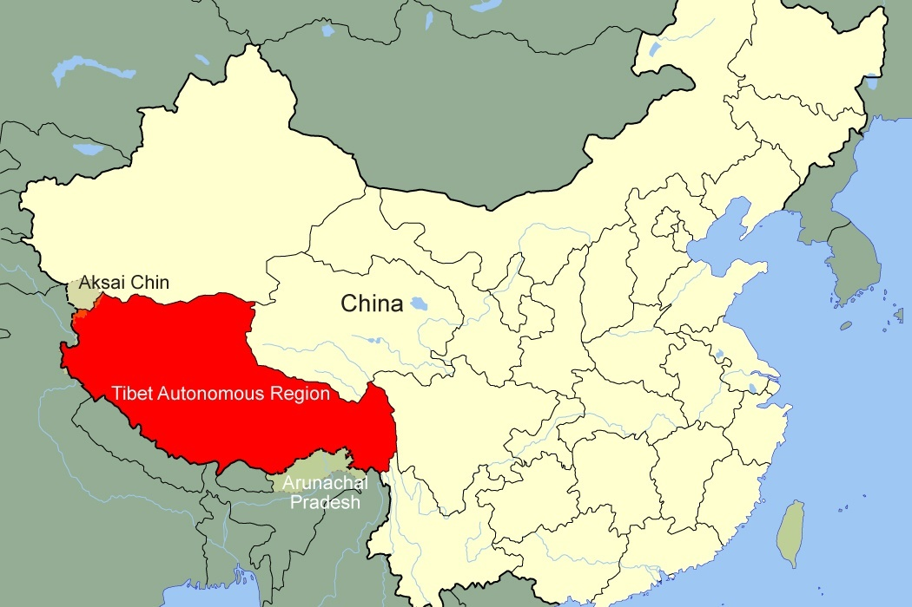

Tibetant Independence is a huge issue in China because there is a huge region
of China that is desperatly wanting to be free of Chinese regulations,
it is a constant battle but currently, the people of Tibet are
still under Chinese government control
Below, you see the actual region of China that is trying to claim its Independence. 
Are there censorship issues in the heart of China?
Yup, the people who live in the heart of China could lose everything they have
if they chose to speak illfully of the chinese leaders.
Below is an example of a well known chinese streamer who has faced the consequences firsthand
Blitzchung Controversy